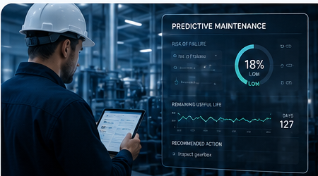
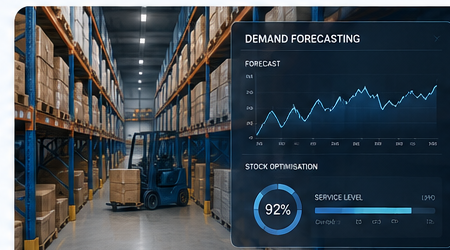
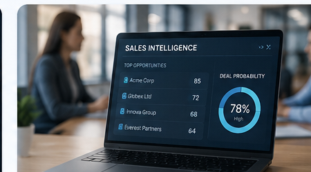
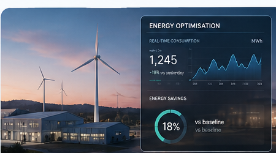
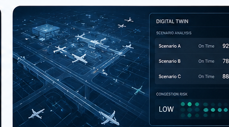

Examples of measurable impact in complex operations
WayNew builds AI and analytics systems that improve throughput, stability and decision quality across operationally demanding environments.
Throughput optimisation
Time based separation and runway throughput optimisation
Capacity impact
One more landing
Per hour on average during strong headwinds.
Delay reduction
80,000 minutes less
Annual arrival delay reduction through smarter sequencing.
Operational consistency
Standardised playbooks
Reusable operational best practices across teams.

Predictive maintenance
Predictive maintenance with AI
Reliability impact
30% fewer outages
AI predicts equipment failures before they disrupt operations.
Maintenance efficiency
20–40% lower costs
Maintenance teams can intervene earlier and plan work more effectively.
Operational continuity
Higher availability
Critical assets remain available when production depends on them most.

Demand forecasting
Demand forecasting and inventory optimisation
Inventory impact
15–25% lower costs
Forecasting improves stock levels across warehouses and supply chains.
Forecast quality
10–20% more accurate
AI combines historical demand, seasonality and external signals.
Customer impact
Improved service levels
Better planning reduces stockouts while avoiding unnecessary inventory.

Sales intelligence
AI-powered sales prioritisation
Commercial impact
20% more qualified opportunities
AI identifies the customers and accounts with the highest potential.
Conversion impact
10–15% higher conversion
Sales teams focus their time on the opportunities most likely to move.
Revenue quality
Better pipeline focus
Customer and market signals become practical next-best actions.

Energy optimisation
Real-time energy optimisation
Cost impact
10–20% energy savings
AI adjusts energy usage based on demand, assets and operating conditions.
Sustainability impact
Lower CO₂ footprint
Operational decisions can reduce both costs and emissions.
Control quality
Continuous optimisation
Energy performance is monitored and improved in real time.

Workforce planning
Intelligent workforce scheduling
Productivity impact
15% higher productivity
Optimisation balances demand, skills and availability across teams.
Cost impact
Reduced overtime
Better staffing plans reduce last-minute changes and labour costs.
Employee impact
Improved satisfaction
Fairer and more predictable schedules improve team experience.
Digital twin
Digital twin decision support
Decision impact
Faster decisions
Teams can test scenarios before implementing changes in reality.
Risk impact
Lower operational risk
Digital twins reveal bottlenecks, dependencies and unintended effects.
Scenario quality
Better scenario evaluation
Operators compare options and choose the most robust intervention.
